The random() function performs its function, and will fit your needs nicely, but there are different types of random that can be more useful in some situations. In the window below, random numbers are repeatedly generated and drawn as a vertical line. Notice the difference in behavior of each.
Evenly Distributed Random: This gives an equal chance of each value. You can see that as values are added, they evenly spread across the window.
Gaussian Random: This random function gives a Normal Distribution of random numbers, grouped around a specific centerpoint.
Perlin Noise/Simplex Noise: This function generates random numbers, but in a way where sequential numbers are close to each other.
The results of the noise() function are what we will be exploring today. Its results are random, but not so chaotic as fully random.
Open the Noise Demo workspace, where will you be met with the following loop:
for(let x = 0; x < width; x++){
let y = random();
circle(x,y,5);
}
The looping variable x is representing every x location in the canvas, and at each point it is drawing a circle with a random y value. Run the program and you'll see a relatively boring line gets drawn:
This is because the random() function generates a value from 0 to 1, meaning each circle is drawn relatively close to the top of the canvas.
What we really want is a random value with a larger range. While the random() function is built to take parameters for this purpose, we are going to use a more mathy approach and multiply the random() value by the height of the canvas:
let y = random()*height;
With this modification, run the program again and inspect the result:
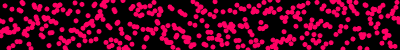
The circle drawn at each location has chaotic randomness. Each random number has nothing to do with the one before it.
The noise() function is also random, but it's random-ish. It accepts a parameter,
and is designed in a way that calling it twice with two parameters that are close to each other
will result in random values that are close.
For example, consider these three calls to noise():
let n1 = noise( 5 );
let n2 = noise( 10 );
let n3 = noise( 5.01 );
n1 and n2 are generated using two numbers that are far away from each other:
5 and 10. The result will be two random values that don't seem related.
n1 and n3, however, were generated with numbers that are very close:
5 and 5.01. You can expect that the resulting generated values will be close as well.
noise() Instead of random()
The way that we are going to use this in our code will be to call the noise()
function instead of random(). To get parameters that are close to each other,
we are going to be using our x-location.
Modify the line that initializes y to be a random number, so that it uses
noise() instead:
let y = noise( x * 0.01 ) * height;
Multiplying by 0.01 may look odd here. The reason is that we want the parameters
to be very close to each other. Each x value is 1 apart, which is too far for the
noise() function to consider them "close". Multiplying by 0.01
will generate values that are sufficiently close.
The noise() function, like random(), generates a value from
0 to 1, so we still need to use multiplication to "stretch" its range to be between
0 and the height of the canvas.
The result should be a program that gives you something like this:
Notice the semi-randomness that appears. Each circle's y location is random, but still close to the number that comes before it. The result is a value that more naturally grows and shrinks.
One way to use noise is to use it to make movement that has a drifting feel. By using a time-based parameter to generate your noise value, you get something that has a gradualy up and down motion to it. In the example above, notice that the circle on the left seems to be floating.
Open the Candle Workspace. There is a lot of provided code, and if you run the program you'll see that it is there to draw a candle on the canvas.
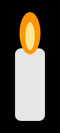
The only thing that you will need ot worry about is the provided flameSize variable:
let flameSize = 70;
This determines the size of the flame on the candle. What we are going to do is to use noise to make this value shift slightly over time.
Before the flameSize variable is declared, add the following line:
let n = noise(frameCount*0.015);
Notice that this time we are using the frameCount variable to generate our noise. This means that we will get a different noise value each frame, and if we use it in our drawing we will see it change over time.
Our goal is to make the flameSize shift between 60 and 90. Since that has a range of 30, we will have to do a little more math to it.
Modify the flameSize to be 30*n + 60. This will give it a range of 30, but never go below 60. Run the program again and hopefully you'll see a light flickering of the candle.
There is another variable that is in charge of how the sketch looks, bgOpacity. The background is opaque when it has a large value, but a smaller value makes it more transparent. For the full effect we want it to range from 250 to 150, being its smallest when the noise value is large. Add the following alongside the flameSize:
let bgOpacity = 250 - 100*n;
With this update you should just be able to make out the creepy stuff hidden in the dark.
Open the Floating Bubble workspace. There you have been provided functions that will draw a watery background, as well as a drawBubble() function to draw a bubble on the canvas. This function accepts parameters representing the location of the bubble, and an example of how to call it is provided:
drawBubble(100,250);//draws a bubble at (100,250)
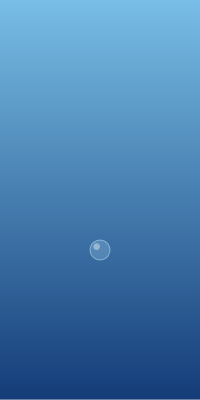
Our goal is to create motion with out bubble that causes it to float to the top of the canvas.
drawBubble(x,y)Though there should be no movement yet, running the program should cause the bubble to appear at the bottom of the canvas.
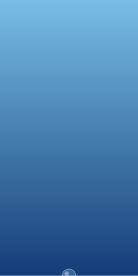
Our goal will be to add a 'floating' motion to animate the bubble
We want the bubble to float up the screen, but we also want it to reset to the bottom of the screen when it drifts off. Modify the draw() function to first decrease y by 1.5, then use an if statement to check if it has gone below -20. If it has, reset y to be 420.
If done properly, running the program should cause a bubble that repeatedly drifts up the screen.
To get the bubble to drift to the left and right we are going to use noise that will change over time. Get a noise value using: noise(frameCount * 0.005) and multiply it by the width of the canvas. The resulting value should be assigned to your x variable.
If done properly, your bubble should now sway left and right as it drifts up the window.
In the 1970's, the band Joy Division released its Unknown Pleasures album, which had a very distinct cover:
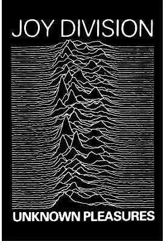
Looking closely, we can see a series of noisy lines being generated.
Open the Album Cover workspace
There you have been provided a lot of code to help. The key focus is the drawSquiggle() function, which is
intended to draw one of our squiggly lines. We will first implement that, and later modify the draw() function
to call it many times.
Go to the drawSquiggle function, which has some code that we haven't seen before. It calls beginShape(), has a gap, and then calls
endShape().
This is a way for p5 to define a shape (or line) that is not a rectangle, ellipse or arc. Between the calls to
beginShape() and endShape(), our job is to call the vertex() function with each point
that we want on our shape. Previously we have simply drawn a bunch of circles close together to form a line, but creating this way creates a shape that can have a fill(), which will allow us to get the overlapping that we see in the album.
Let's start by drawing a straight line. After the beginShape() function is called, write a for loop that will
generate all the x values from 50 to 350. Each time call vertex( x, 0 ), and make sure that your loop ends
before the call to endShape().
The result should be a straight line when you run your program.
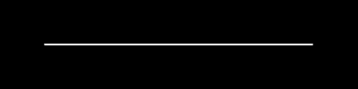
Note: Even though the y-coordinates of the points are all 0, the translate function at the top of the function causes them to be drawn down the screen more.
To get a squiggle, we are going to get a y value that is based on noise. Inside your loop, add get a noise value with the following:
let n = noise(x*0.02);Again the noise value is based on the x location. Previously we've used simple multiplication to 'stretch' our values, but that won't give us such sharp peaks. Instead, use the following:
let y = -Math.pow(2,7*n);
By using the noise as an exponent, larger values are made much larger than small ones. This should give us the peaks that
we want. Update your call to vertex to include the generated y value: vertex(x,y)
Run your program a few times. You should get some peaky squiggles:
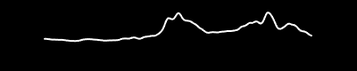
Our squiggly line has too much squiggle. Notice on the album that the lines are flat for a while, taper up to squiggly, then go back to flat by the end.
To help with this, Mr. Sacco has provided the bump() function. It accepts an x value and uses fancy math to
output a value from 0 to 1 that has a shape like this:
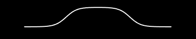
Using this is simple. You simply need to get the value of the bump() function at x and multiply it by your y.
Values toward the left and right will be multiplied by 0 and practically eliminated. You can accomplish this directly in
your call to vertex:
vertex( x, bump(x)*y );With this modification made, run your program a few times and look at the squiggles. They should have a similar 'peaky noise' look, but the left and right sides should now be flat.
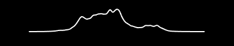
Now that the drawSquiggle function works properly, it's time to draw many of them. Go to the draw()
function, where there is currently a single line calling drawSquiggle(50). Modify that line to include a for
loop that generates every y value from 60 to 440, increasing by 6 each step. Inside the loop call
drawSquiggle( y ).
This should cause many squiggles to be drawn, but running it should produce a very specific problem.
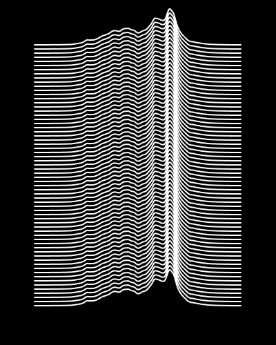
Since the noise() function only relies on the x value, all lines are getting the same noise values. We can fix
this by giving each line a random offset.
Before the loop, get a random number to act as the offset:
let offset = random(100);Inside the loop, modify your call to noise to include that offset:
let n = noise(x*0.02 + off);With this change, each line's generated noise values will all be a different range of the noise space.
Run your program one more time to see your generated album cover.
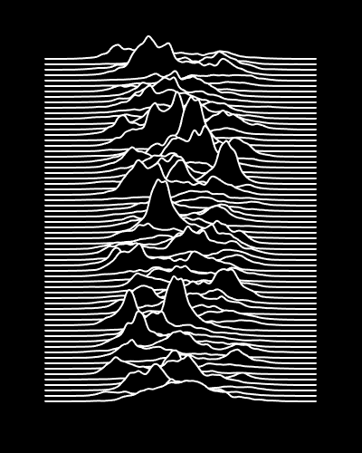
The noise() function is intended to be interpreted as a 'noise space', where ever location has a noise value,
but we haven't been using its full function. In reality, we can give it a second parameter when generating
noise(). We can think of this as the y coordinate in our noise space.
let n = noise(x*0.01, y*0.01); //Every xy gets a noise valueLike before, this call will give you a random-ish value that is similar to the values that are 'close' to it. This time, since the location has a y value, close can mean a small variation in the x OR the y. This produces a two-dimensional grid of noisy values.

In this image, large values are RED and small values are BLUE. Notice how there isn't a fully red value next to a fully blue value, no matter what direction you head. Below is another example of a field, except the noise value is mapped to the brightness of a gray square.
Open the Terrain Map Workspace
First we want to visualize the noise space. In the draw function, use a nested loop to generate a grid of xy values. They should both go from 0 to 350, increasing by 10 each step.
At each xy location get a 2D noise value:
let n = noise(x*0.01, y*0.01);
We want to draw a noise-based 10x10 square at that location. To get the right color, multiply your noise value by 256 and
use that as your fill().
Run your program and you should see a grayscale image where the noise gives it a 'cloudy' effect.
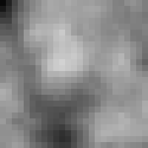
The 'natural randomness' of noise functions are used a lot when creating procedurally generated maps. If we interpret the noise value a little differently, we can create a random map generator.
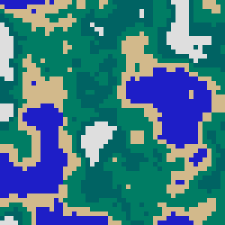
To generate a map like the one above, the noise value will help you choose between one of five colors for the fill of each square.
Note that these values are for the raw noise value. Values that have been multiplied by 256 for the previous step will all be too large.
Use a series of if statements to help you choose the appropriate fill for each box,
Feel free to use my rgb values, or make up your own:
A vector field is a space where every location has a direction associated with it. If we generate the vectors using our noise() function, we get areas of the field that have similar directions and 'flow' together.
Each vector in our field will be represented with a circle representing the location, and a line representing the direction it is pointing. To help, you have been provided the drawVector() function, which translates to a location before rotating a given angle and drawing a line.
function drawVector(x,y,angle){
translate(x,y);
rotate(angle);
line(0,0,8,0);
circle(0,0,2);
resetMatrix();
}The draw() function has a simple example of how to draw a vector at (20,15) pointing in the 60 degree direction:
drawVector(20,15,60);
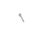
Our goal is to call the drawVector() function using a grid of locations, using angles that are derived from noise.
Add nested for loops to the draw() function that will generate a grid of values, each 12 pixels apart. At each location, get a location-based noise value:
let n = noise(x*0.01, y*0.01);
Multiply that noise value by 360 to 'stretch' it into an angle, then call the drawVector() function with the generated xy location and angle. IF done properly, you should get a vector field like the image above.
If you click on the canvas above, you'll see that it is interactive and you can place a small circle on the field. That circle is a traveler, and will start to wander around, but using the flow of the vector field to guide it.
The basic setup is much like our Pong ball that moved around the screen:
With this completed, you should be able to run your sketch and see the traveler in the center of the window, not moving.
We make movement by changing the x and y values a small amount with each draw cycle. In the past we've used speed variables, but now we want each movement to be tied to the noise value at the traveler's location.
Like before, we want to first get a noise value, and then map it to an angle. Use the noise() function as you have been, except this time using the traveler's x and y variables. After getting an angle it's time for a little trig:
let dx = cos(angle);
let dy = sin(angle);These two lines will calculate the x and y components of you movement. All that's left to do is to move the traveler by increasing its x and y variables by the calculated dx and dy.
x += dx;
y += dy;If done properly, running the program should show your traveler flowing in the direction of the vectors.
For this sketch, each of the squares is using a two-dimensional noise() value to help it generate its:
The motion that you're seeing comes from including the ever-changing frameCount as the third parameter of our
noise() function
let n = noise(x*0.01, y*0.01, frameCount*0.005);This means that we can get two-dimensional noise, but it will be slightly different each frame. Once you have the noise value, you can multiply it to get values in the the ranges you want for the size, color, and rotation.
The best way to draw a rotated square is to rely on the use of translate(), rotate(), and
resetMatrix(). Translate to the location that you want to draw the square,
rotate the angle that you want it to be, and draw it at (0,0) with rectMode(CENTER) on. An example of drawing a rotated square at (25,25), rotated 45 degrees has been provided to help:
translate(25,25); rotate(45); square(0,0,20); resetMatrix();
It is important to include the resetMatrix() line inside your loop. Otherwise the repeated translation will build up and get out of control.
When you've finished, run your sketch to make sure that the you can see the size, color, and rotation of you squares changing in a 'noisy' way.